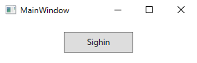
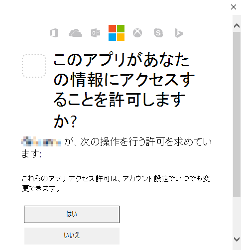
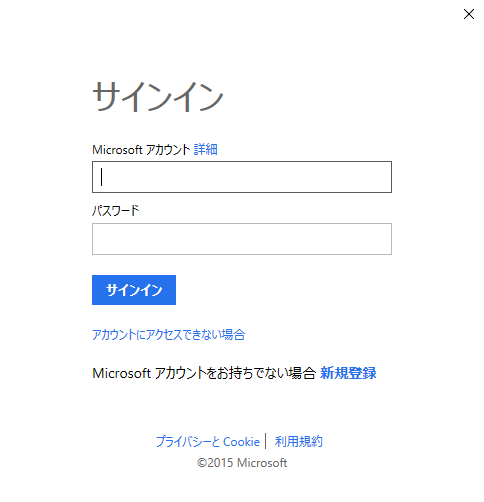
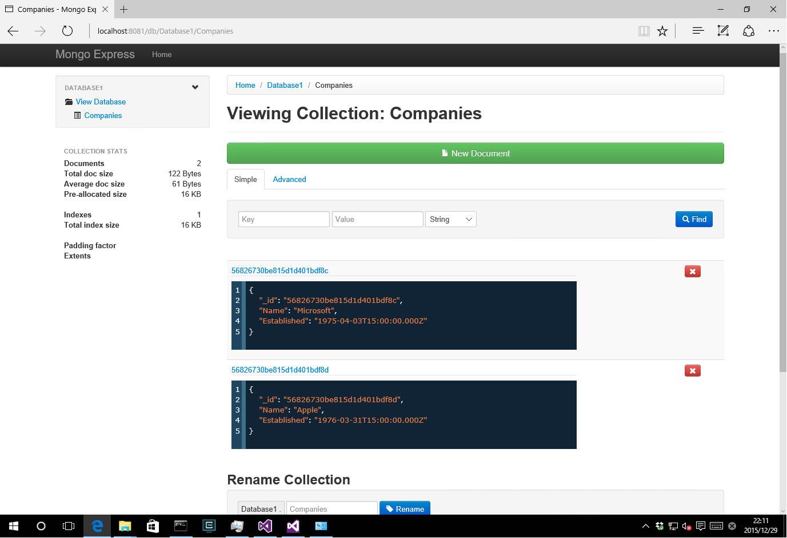

Microsoft Office 365 Solo を契約してるので、1TBの OneDrive クラウドストレージの使用権を保持しています。
ということでまた新しい企画。というか .NETでOneDriveを～ って普通じゃん。 でも、一応私の中のプライベートプロジェクトとしては、色々関連性があるんですね。 そのために、軽く調べているんですが….あまり情報がありません。
Introduction
私見ですが、Microsoftのストレージ戦略は安定していない印象です。 私は、Windows Live Folderと呼ばれていたストレージサービスを使っていたことがありますが、かなりサービスが変わっています。 jz5.jp様 がOneDriveに至るまでの素晴らしい概要図を提供されていますので、参考に。 で、安定していないので、開発者としては注力しづらいんですよね。 当時、SkyDriveのAPIが公開されたときは、開発者が自由にアクセスして自由にファイルを保存できるアプリを作れる、って興奮しましたが、何だか中途半端な感じだったのを覚えています。 例えば、拡張子の制限とか、REST APIとかで、面倒な感じでした。 で、時は移ろい、商標問題とかWindows 8とかで、ブランドを一新したのは記憶に新しいでしょう。 (つい最近、無制限のストレージ仕様を撤回して、顰蹙を買った世間を驚かせたのも。私はそこまで影響はなかったですが。) そんなOndDriveはGitHubでSDKを公開しています。 ここで面白いのは、C#だけでなく、iPhone,Android,Python向けのSDKも同時に公開している点です。 CEOにSatya Nadellaが就任してから、オープンソース戦略を恐ろしいほどの積極さで進めているMicrosoftですが、SDKを自社のエコシステム以外でも使える形で提供しているのは、単にソフトを売る戦略からサービスを使ってもらう戦略に注力し、そのためには開発者の力を使って広くMicrosoftのサービスを知ってもらうほうが得策だと考えたのでしょう。 話がずれましたが、SDKはここからプラットフォームに応じたGitHubのページに飛べます。
Explanation
C#向けとあって、非常に高いレベルで洗練されたSDKになっています。 従来のSkyDrive APIでREST APIを組み立てていたのが嘘みたいです。 GitHubのページの
var drive = await oneDriveClient .Drive .Request() .GetAsync();
を見れば、そのシンプルなAPIがよくわかります。 C#の async/await構文 も相まって、非同期処理もシンプルにかけます。 では、最初は認証処理から。WPFで作ります。WinFormsは疲れました。 この手のサービスは認証が全てです。その都度認証キーを送るのか、Cookieにトークンを保持して、その手の処理を意識させないのか、等色々あると思いますが。 OndDrive SDKはOAuthを採用したようです。OAuthについてはWikipediaを見てね。説明できないから。 今回のサンプルは、ここにあります。
1. 開発準備
最新のリリースを落としてきます。執筆時点では1.1.20です。対象は.NET 4.5.1以上かつWindows 8.1以上です。 中身の OneDriveSdk.sln を Windows7 で開こうとすると、Windows 8.1以上が必要なプロジェクト云々のエラーが出ますし、ビルドはできますが、実行時に、TargetInvocationException を吐いて落ちます。 続いて、Nugetパッケージの復元を実行します。OneDriveSDKプロジェクトは ポータブルクラスライブラリ (PCL) で作られおり、Nugetパッケージの Newtonsoft.Json を使っていますので、これを復元します。 (別のプロジェクトは、Microsoft.IdentityModel.Clients.ActiveDirectory とかを使用していますが。同時に復元されます。) 復元完了後、OneDriveSDKプロジェクトをビルドします。ビルド完了後、OneDriveSdk\bin 直下の Debug か Release フォルダにOneDriveSdk.dll、Newtonsoft.Json.dllが出力されているので、これを回収しておきます。 次に、SDKを使用するためにアプリケーションの登録を行います。 Twitterとかのクライアントと同じように、サービスを使用するアプリケーションを識別するための情報を取得します。 Microsoft account Developer Center から登録します。 Microsoft アカウントでログインしてください。 ログイン後、マイアプリケーションの作成、とでるので画面の指示に従ってください。 完了後、クライアント IDとクライアント シークレット が手に入ります。 これで準備完了です。
2. 実装
認証機能を実装します。 WPFなので、MVVMのサポートライブラリがないと、つらたん、なのでMVVM Light ToolkitをNugetで参照します。別にLivetとかでもいいですよ？この辺はご自由に。 認証時、OneDriveへのサインインが行われるのですが、これは単純にWebBrowserにページを表示させているだけです。 なので、任意のUserControlやWindowに表示させることも可能ですが、WPFでMVVMを意識して実装するとNavigatedイベントとかが超絶面倒なので、認証ダイアログはGitHubのWinFroms実装にある https://github.com/OneDrive/onedrive-sdk-csharp/tree/master/src/OneDriveSdk.WindowsForms/Web をコピーしてきました。 そして実装したのが下記のコードです。 [code lang=”csharp”] private async void ExecuteSingIn() { if (this._OneDriveClient == null) { this._OneDriveClient = OneDriveClient.GetMicrosoftAccountClient( ClientId, ReturnUrl, Scopes, webAuthenticationUi: new FormsWebAuthenticationUi()); }
try { if (!this._OneDriveClient.IsAuthenticated) { await this._OneDriveClient.AuthenticateAsync(); }
if (this._OneDriveClient.IsAuthenticated) { MessageBox.Show( “Authentication was successful”, “Authentication was successful”, MessageBoxButton.OK); } } catch (OneDriveException exception) { if (!exception.IsMatch(OneDriveErrorCode.AuthenticationCancelled.ToString())) { if (exception.IsMatch(OneDriveErrorCode.AuthenticationFailure.ToString())) { MessageBox.Show( “Authentication failed”, “Authentication failed”, MessageBoxButton.OK);
var httpProvider = this._OneDriveClient.HttpProvider as HttpProvider; if (httpProvider != null) { httpProvider.Dispose(); }
this._OneDriveClient = null; } else { throw; } } } } [/code] 冒頭の OneDriveClient.GetMicrosoftAccountClient で認証の準備を行っています。 最後の引数 FormsWebAuthenticationUi は、Microsoft.OneDrive.Sdk.IWebAuthenticationUi を実装しており、唯一のメソッド、Task<Collections.Generic.IDictionary<string, string>> AuthenticateAsync(Uri requestUri, Uri callbackUri) 内で認証ダイアログを表示させるUI要素を用意しています。 その後、クライアントで認証済みかどうかを判定して、AuthenticateAsync メソッドで実際に認証処理を始めます。 注意 サンプルの OneDrive1.ViewModels.MainViewModel.ClientId は空文字になっているので、自身で取得したクライアントIDを設定しください。
3. 実行結果
サンプルソースを実行した結果は、下記のようになります。 (1) 初期画面 
{kind=link}
(2) アクセス許可画面 
{kind=link}
(3) サインイン画面 
{kind=link}
(4) 認証結果 
{kind=link}
認証処理自体は非常に簡単です (認証画面の用意だけは面倒かもしれませんが…)。 次回はOneDrive内部を閲覧してみたいと思います。
Source Code
https://github.com/takuya-takeuchi/Demo/tree/master/OneDrive1